Radio buttons
Radio buttons, also called option buttons, let users select one option from a collection of two or more mutually exclusive, but related, options. Radio buttons are always used in groups, and each option is represented by one radio button in the group.
In the default state, no radio button in a RadioButtons group is selected. That is, all radio buttons are cleared. However, once a user has selected a radio button, the user can't deselect the button to restore the group to its initial cleared state.
The singular behavior of a RadioButtons group distinguishes it from check boxes, which support multi-selection and deselection, or clearing.
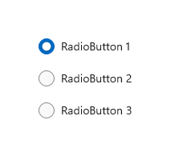
Is this the right control?
Use radio buttons to let users select from two or more mutually exclusive options.
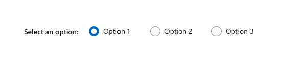
Use radio buttons when users need to see all options before they make a selection. Radio buttons emphasize all options equally, which means that some options might draw more attention than is necessary or desired.
Unless all options deserve equal attention, consider using other controls. For example, to recommend a single best option for most users and in most situations, use a combo box to display that best option as the default option.
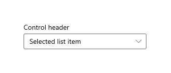
If there are only two possible options that can be expressed clearly as a single binary choice, such as on/off or yes/no, combine them into a single check box or toggle switch control. For example, use a single check box for "I agree" instead of two radio buttons for "I agree" and "I don't agree."
Don't use two radio buttons for a single binary choice:
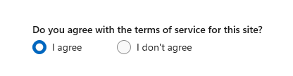
Use a check box instead:
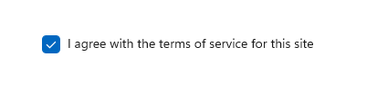
When users can select multiple options, use check boxes.

When users' options lie within a range of values (for example, 10, 20, 30, ... 100), use a slider control.

If there are more than eight options, use a combo box.
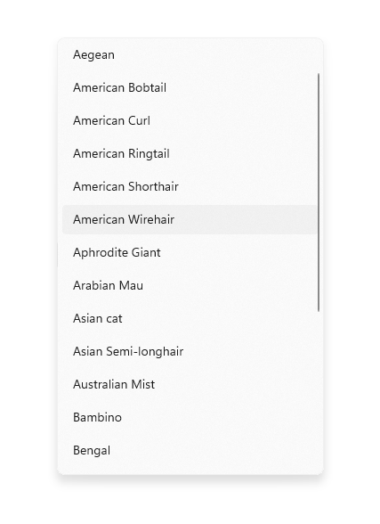
If the available options are based on an app's current context, or they can otherwise vary dynamically, use a list control.
Recommendations
- Make sure that the purpose and current state of a set of radio buttons is explicit.
- Limit the radio button's text label to a single line.
- If the text label is dynamic, consider how the button will automatically resize and what will happen to any visuals around it.
- Use the default font unless your brand guidelines tell you otherwise.
- Don't put two RadioButtons groups side by side. When two RadioButtons groups are right next to each other, it can be difficult for users to determine which buttons belong to which group.
RadioButtons overview
RadioButtons vs RadioButton
There are two ways to create radio button groups: RadioButtons and RadioButton.
- We recommend the RadioButtons control. This control simplifies layout, handles keyboard navigation and accessibility, and supports binding to a data source.
- You can use groups of individual RadioButton controls.
Keyboard access and navigation behavior have been optimized in the RadioButtons control. These improvements help both accessibility and keyboard power users move through the list of options more quickly and easily.
In addition to these improvements, the default visual layout of individual radio buttons in a RadioButtons group has been optimized through automated orientation, spacing, and margin settings. This optimization eliminates the requirement to specify these properties, as you might have to do when you use a more primitive grouping control, such as StackPanel or Grid.
Navigating a RadioButtons group
The RadioButtons control has special navigation behavior that helps keyboard users navigate the list more quickly and more easily.
Keyboard focus
The RadioButtons control supports two states:
- No radio button is selected
- One radio button is selected
The next sections describe the focus behavior of the control in each state.
No radio button is selected
When no radio button is selected, the first radio button in the list gets focus.
Note
The item that receives tab focus from the initial tab navigation is not selected.
List without tab focus, no selection
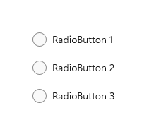
List with initial tab focus, no selection
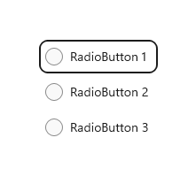
One radio button is selected
When a user tabs into the list where a radio button is already selected, the selected radio button gets focus.
List without tab focus
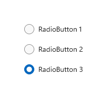
List with initial tab focus
Keyboard navigation
For more information about general keyboard navigation behaviors, see Keyboard interactions - Navigation.
When an item in a RadioButtons group already has focus, the user can use arrow keys for "inner navigation" between the items within the group. The Up and Down arrow keys move to the "next" or "previous" logical item, as defined in your XAML markup. The Left and Right arrow keys move spatially.
Navigation within single-column or single-row layouts
In a single-column or single-row layout, keyboard navigation results in the following behavior:
Single column
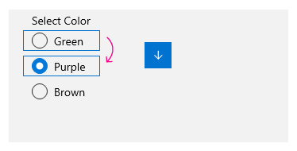
The Up arrow and Down arrow keys move between items.
The Left arrow and Right arrow keys do nothing.
Single row
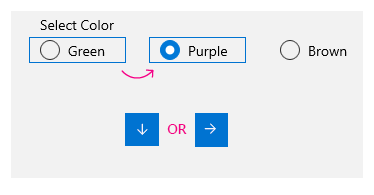
The Left and Up arrow keys move to the previous item, and the Right and Down arrow keys move to the next item.
Navigation within multi-column, multi-row layouts
In a multi-column, multi-row grid layout, keyboard navigation results in this behavior:
Left/Right arrow keys
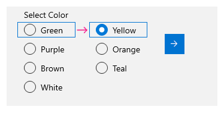
The Left and Right arrow keys move focus horizontally between items in a row.
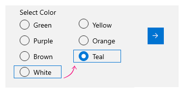
When focus is on the last item in a column and the Right or Left arrow key is pressed, focus moves to the last item in the next or previous column (if any).
Up/Down arrow keys
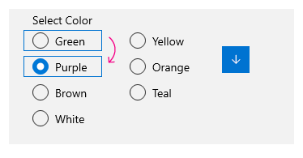
The Up and Down arrow keys move focus vertically between items in a column.
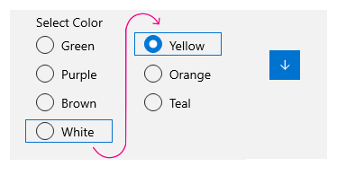
When focus is on the last item in a column and the Down arrow key is pressed, focus moves to the first item in the next column (if any). When focus is on the first item in a column and the Up arrow key is pressed, focus moves to the last item in the previous column (if any)
For more information, see Keyboard interactions.
Wrapping
The RadioButtons group doesn't wrap focus from the first row or column to the last, or from the last row or column to the first. This is because, when users use a screen reader, a sense of boundary and a clear indication of beginning and end is lost, which makes it difficult for users with visual impairment to navigate the list.
The RadioButtons control also doesn't support enumeration, because the control is intended to contain a reasonable number of items (see Is this the right control?).
Selection follows focus
When you use the keyboard to navigate between items in a RadioButtons group, as focus moves from one item to the next, the newly focused item gets selected and the previously focused item is cleared.
Before keyboard navigation
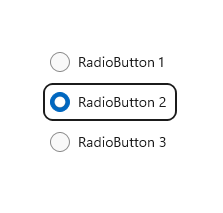
Focus and selection before keyboard navigation.
After keyboard navigation
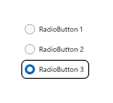
Focus and selection after keyboard navigation, where the Down arrow key moves focus to radio button 3, selects it, and clears radio button 2.
You can move focus without changing selection by using Ctrl+arrow keys to navigate. After focus is moved, you can use the Spacebar to select the item that currently has focus.
Navigating with game pad and remote control
If you use a game pad or remote control to move between radio buttons, the "selection follows focus" behavior is disabled, and the user must press the "A" button to select the radio button that currently has focus.
Accessibility behavior
The following table describes how Narrator handles a RadioButtons group and what is announced. This behavior depends on how a user has set the Narrator detail preferences.
| Action | Narrator announcement |
|---|---|
| Focus moves to a selected item | "name, RadioButton, selected, x of N" |
| Focus moves to an unselected item (If navigating with Ctrl-arrow keys or Xbox gamepad, which indicates selection is not following focus.) |
"name, RadioButton, non-selected, x of N" |
Note
The name that Narrator announces for each item is the value of the AutomationProperties.Name attached property if it is available for the item; otherwise, it is the value returned by the item's ToString method.
x is the number of the current item. N is the total number of items in the group.
Create a WinUI RadioButtons group
The WinUI 3 Gallery app includes interactive examples of most WinUI 3 controls, features, and functionality. Get the app from the Microsoft Store or get the source code on GitHub
The RadioButtons control uses a content model similar to an ItemsControl. This means that you can:
- Populate it by adding items directly to the Items collection or by binding data to its ItemsSource property.
- Use the SelectedIndex or SelectedItem properties to get and set which option is selected.
- Handle the SelectionChanged event to take action when an option is chosen.
Here, you declare a simple RadioButtons control with three options. The Header property is set to give the group a label, and the SelectedIndex property is set to provide a default option.
<RadioButtons Header="Background color"
SelectedIndex="0"
SelectionChanged="BackgroundColor_SelectionChanged">
<x:String>Red</x:String>
<x:String>Green</x:String>
<x:String>Blue</x:String>
</RadioButtons>
The result looks like this:
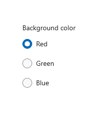
To take an action when the user selects an option, handle the SelectionChanged event. Here, you change the background color of a Border element named "ExampleBorder" (<Border x:Name="ExampleBorder" Width="100" Height="100"/>).
private void BackgroundColor_SelectionChanged(object sender, SelectionChangedEventArgs e)
{
if (ExampleBorder != null && sender is RadioButtons rb)
{
string colorName = rb.SelectedItem as string;
switch (colorName)
{
case "Red":
ExampleBorder.Background = new SolidColorBrush(Colors.Red);
break;
case "Green":
ExampleBorder.Background = new SolidColorBrush(Colors.Green);
break;
case "Blue":
ExampleBorder.Background = new SolidColorBrush(Colors.Blue);
break;
}
}
}
Tip
You can also get the selected item from the SelectionChangedEventArgs.AddedItems property. There will only be one selected item, at index 0, so you could get the selected item like this: string colorName = e.AddedItems[0] as string;.
Selection states
A radio button has two states: selected or cleared. When an option is selected in a RadioButtons group, you can get its value from the SelectedItem property, and its location in the collection from the SelectedIndex property. A radio button can be cleared if a user selects another radio button in the same group, but it can't be cleared if the user selects it again. However, you can clear a radio button group programmatically by setting it SelectedItem = null, or SelectedIndex = -1. (Setting SelectedIndex to any value outside the range of the Items collection results in no selection.)
RadioButtons content
In the previous example, you populated the RadioButtons control with simple strings. The control provided the radio buttons, and used the strings as the label for each one.
However, you can populate the RadioButtons control with any object. Typically, you want the object to provide a string representation that can be used as a text label. In some cases, an image might be appropriate in place of text.
Here, SymbolIcon elements are used to populate the control.
<RadioButtons Header="Select an icon option:">
<SymbolIcon Symbol="Back"/>
<SymbolIcon Symbol="Attach"/>
<SymbolIcon Symbol="HangUp"/>
<SymbolIcon Symbol="FullScreen"/>
</RadioButtons>
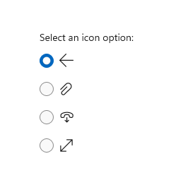
You can also use individual RadioButton controls to populate the RadioButtons items. This is a special case that we discuss later. See RadioButton controls in a RadioButtons group.
A benefit of being able to use any object is that you can bind the RadioButtons control to a custom type in your data model. The next section demonstrates this.
Data binding
The RadioButtons control supports data binding to its ItemsSource property. This example shows how you can bind the control to a custom data source. The appearance and functionality of this example is the same as the previous background color example, but here, the color brushes are stored in the data model instead of being created in the SelectionChanged event handler.
<RadioButtons Header="Background color"
SelectedIndex="0"
SelectionChanged="BackgroundColor_SelectionChanged"
ItemsSource="{x:Bind colorOptionItems}"/>
public sealed partial class MainPage : Page
{
// Custom data item.
public class ColorOptionDataModel
{
public string Label { get; set; }
public SolidColorBrush ColorBrush { get; set; }
public override string ToString()
{
return Label;
}
}
List<ColorOptionDataModel> colorOptionItems;
public MainPage1()
{
this.InitializeComponent();
colorOptionItems = new List<ColorOptionDataModel>();
colorOptionItems.Add(new ColorOptionDataModel()
{ Label = "Red", ColorBrush = new SolidColorBrush(Colors.Red) });
colorOptionItems.Add(new ColorOptionDataModel()
{ Label = "Green", ColorBrush = new SolidColorBrush(Colors.Green) });
colorOptionItems.Add(new ColorOptionDataModel()
{ Label = "Blue", ColorBrush = new SolidColorBrush(Colors.Blue) });
}
private void BackgroundColor_SelectionChanged(object sender, SelectionChangedEventArgs e)
{
var option = e.AddedItems[0] as ColorOptionDataModel;
ExampleBorder.Background = option?.ColorBrush;
}
}
RadioButton controls in a RadioButtons group
You can use individual RadioButton controls to populate the RadioButtons items. You might do this to get access to certain properties, like AutomationProperties.Name; or you might have existing RadioButton code, but want to take advantage of the layout and navigation of RadioButtons.
<RadioButtons Header="Background color">
<RadioButton Content="Red" Tag="red" AutomationProperties.Name="red"/>
<RadioButton Content="Green" Tag="green" AutomationProperties.Name="green"/>
<RadioButton Content="Blue" Tag="blue" AutomationProperties.Name="blue"/>
</RadioButtons>
When you use RadioButton controls in a RadioButtons group, the RadioButtons control knows how to present the RadioButton, so you won't end up with two selection circles.
However, there are some behaviors you should be aware of. We recommend that you handle state and events on the individual controls or on RadioButtons, but not both, to avoid conflicts.
This table shows the related events and properties on both controls.
| RadioButton | RadioButtons |
|---|---|
| Checked, Unchecked, Click | SelectionChanged |
| IsChecked | SelectedItem, SelectedIndex |
If you handle events on an individual RadioButton, such as Checked or Unchecked, and also handle the RadioButtons.SelectionChanged event, both events will fire. The RadioButton event occurs first, and then the RadioButtons.SelectionChanged event occurs, which could result in conflicts.
The IsChecked, SelectedItem, and SelectedIndex properties stay synchronized. A change to one property updates the other two.
The RadioButton.GroupName property is ignored. The group is created by the RadioButtons control.
Defining multiple columns
By default, the RadioButtons control arranges its radio buttons vertically in a single column. You can set the MaxColumns property to make the control arrange the radio buttons in multiple columns. (When you do this, they are laid out in column-major order, where items fill in from top to bottom, then left to right.)
<RadioButtons Header="RadioButtons in columns" MaxColumns="3">
<x:String>Item 1</x:String>
<x:String>Item 2</x:String>
<x:String>Item 3</x:String>
<x:String>Item 4</x:String>
<x:String>Item 5</x:String>
<x:String>Item 6</x:String>
</RadioButtons>
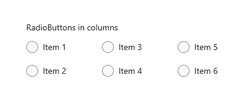
Tip
To have items arranged in a single horizontal row, set MaxColumns equal to the number of items in the group.
Create your own RadioButton group
Important
We recommend using the RadioButtons control to group RadioButton elements.
Radio buttons work in groups. You can group individual RadioButton controls in either of two ways:
- Put them inside the same parent container.
- Set the GroupName property on each radio button to the same value.
In this example, the first group of radio buttons is implicitly grouped by being in the same stack panel. The second group is divided between two stack panels, so GroupName is used to explicitly group them into a single group.
<StackPanel>
<StackPanel>
<TextBlock Text="Background" Style="{ThemeResource BaseTextBlockStyle}"/>
<!-- Group 1 - implicit grouping -->
<StackPanel Orientation="Horizontal">
<RadioButton Content="Green" Tag="green" Checked="BGRadioButton_Checked"/>
<RadioButton Content="Yellow" Tag="yellow" Checked="BGRadioButton_Checked"/>
<RadioButton Content="White" Tag="white" Checked="BGRadioButton_Checked"
IsChecked="True"/>
</StackPanel>
</StackPanel>
<StackPanel>
<TextBlock Text="BorderBrush" Style="{ThemeResource BaseTextBlockStyle}"/>
<!-- Group 2 - grouped by GroupName -->
<StackPanel Orientation="Horizontal">
<StackPanel>
<RadioButton Content="Green" Tag="green" GroupName="BorderBrush"
Checked="BorderRadioButton_Checked"/>
<RadioButton Content="Yellow" Tag="yellow" GroupName="BorderBrush"
Checked="BorderRadioButton_Checked" IsChecked="True"/>
<RadioButton Content="White" Tag="white" GroupName="BorderBrush"
Checked="BorderRadioButton_Checked"/>
</StackPanel>
</StackPanel>
</StackPanel>
<Border x:Name="ExampleBorder"
BorderBrush="#FFFFD700" Background="#FFFFFFFF"
BorderThickness="10" Height="50" Margin="0,10"/>
</StackPanel>
private void BGRadioButton_Checked(object sender, RoutedEventArgs e)
{
RadioButton rb = sender as RadioButton;
if (rb != null && ExampleBorder != null)
{
string colorName = rb.Tag.ToString();
switch (colorName)
{
case "yellow":
ExampleBorder.Background = new SolidColorBrush(Colors.Yellow);
break;
case "green":
ExampleBorder.Background = new SolidColorBrush(Colors.Green);
break;
case "white":
ExampleBorder.Background = new SolidColorBrush(Colors.White);
break;
}
}
}
private void BorderRadioButton_Checked(object sender, RoutedEventArgs e)
{
RadioButton rb = sender as RadioButton;
if (rb != null && ExampleBorder != null)
{
string colorName = rb.Tag.ToString();
switch (colorName)
{
case "yellow":
ExampleBorder.BorderBrush = new SolidColorBrush(Colors.Gold);
break;
case "green":
ExampleBorder.BorderBrush = new SolidColorBrush(Colors.DarkGreen);
break;
case "white":
ExampleBorder.BorderBrush = new SolidColorBrush(Colors.White);
break;
}
}
}
These two groups of RadioButton controls look like this:
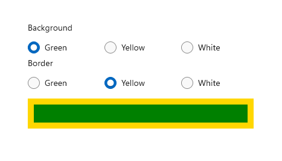
Radio button states
A radio button has two states: selected or cleared. When a radio button is selected, its IsChecked property is true. When a radio button is cleared, its IsChecked property is false. A radio button can be cleared if a user selects another radio button in the same group, but it can't be cleared if the user selects it again. However, you can clear a radio button programmatically by setting its IsChecked property to false.
Visuals to consider
The default spacing of individual RadioButton controls is different than the spacing provided by a RadioButtons group. To apply the RadioButtons spacing to individual RadioButton controls, use a Margin value of 0,0,7,3, as shown here.
<StackPanel>
<StackPanel.Resources>
<Style TargetType="RadioButton">
<Setter Property="Margin" Value="0,0,7,3"/>
</Style>
</StackPanel.Resources>
<TextBlock Text="Background"/>
<RadioButton Content="Item 1"/>
<RadioButton Content="Item 2"/>
<RadioButton Content="Item 3"/>
</StackPanel>
The following images show the preferred spacing of radio buttons in a group.
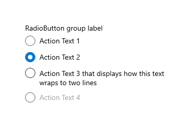
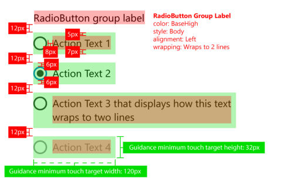
Note
If you're using a WinUI RadioButtons control, the spacing, margins, and orientation are already optimized.
UWP and WinUI 2
Important
The information and examples in this article are optimized for apps that use the Windows App SDK and WinUI 3, but are generally applicable to UWP apps that use WinUI 2. See the UWP API reference for platform specific information and examples.
This section contains information you need to use the control in a UWP or WinUI 2 app.
The RadioButtons control for UWP apps is included as part of WinUI 2. For more info, including installation instructions, see WinUI 2. APIs for these controls exist in both the Windows.UI.Xaml.Controls and Microsoft.UI.Xaml.Controls namespaces.
- UWP APIs: RadioButton class, IsChecked property, Checked event
- WinUI 2 Apis: RadioButtons class, SelectedItem property, SelectedIndex property, SelectionChanged event
- Open the WinUI 2 Gallery app and see the RadioButton in action. The WinUI 2 Gallery app includes interactive examples of most WinUI 2 controls, features, and functionality. Get the app from the Microsoft Store or get the source code on GitHub.
There are two ways to create radio button groups.
- Starting with WinUI 2.3, we recommend the RadioButtons control. This control simplifies layout, handles keyboard navigation and accessibility, and supports binding to a data source.
- You can use groups of individual RadioButton controls. If your app does not use WinUI 2.3 or later, this is the only option.
We recommend using the latest WinUI 2 to get the most current styles and templates for all controls.
To use the code in this article with WinUI 2, use an alias in XAML (we use muxc) to represent the Windows UI Library APIs that are included in your project. See Get Started with WinUI 2 for more info.
xmlns:muxc="using:Microsoft.UI.Xaml.Controls"
<muxc:RadioButtons />